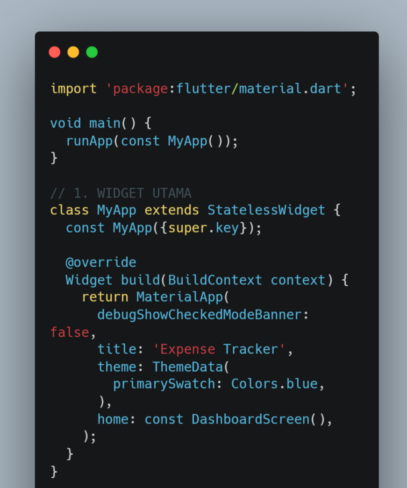
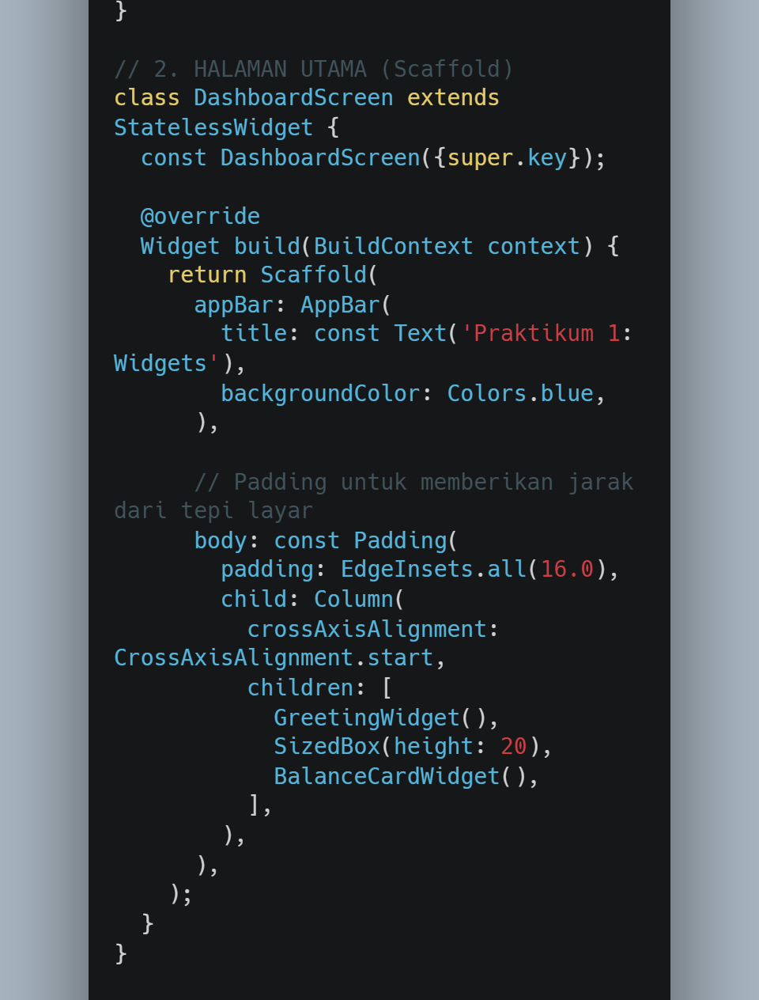
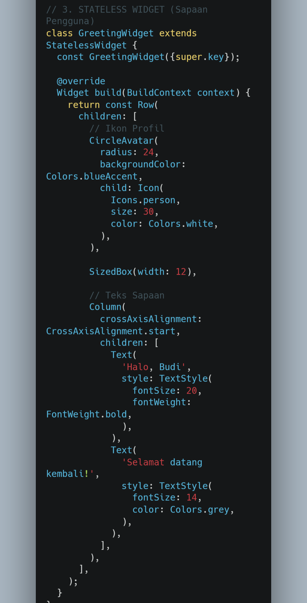
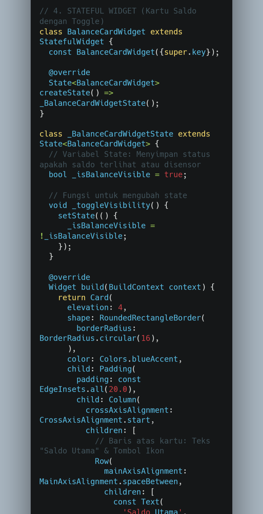
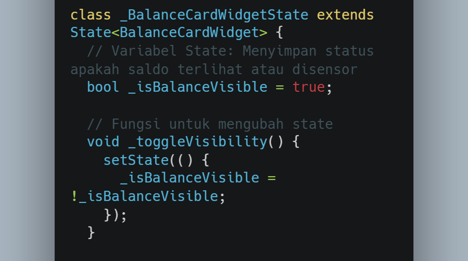
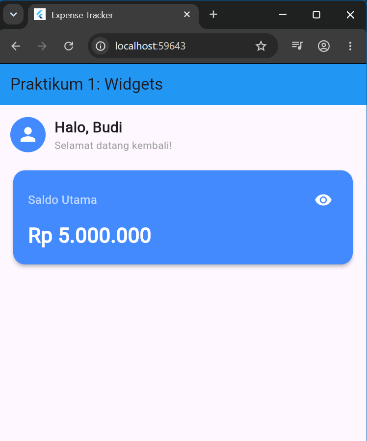
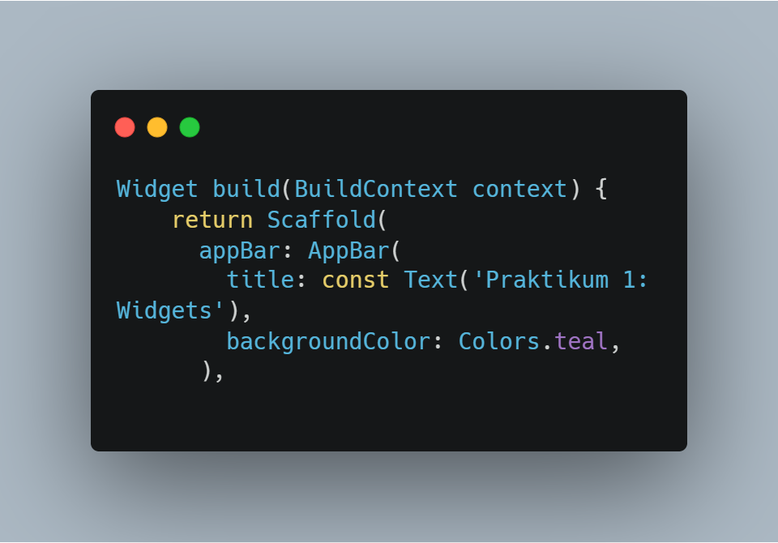
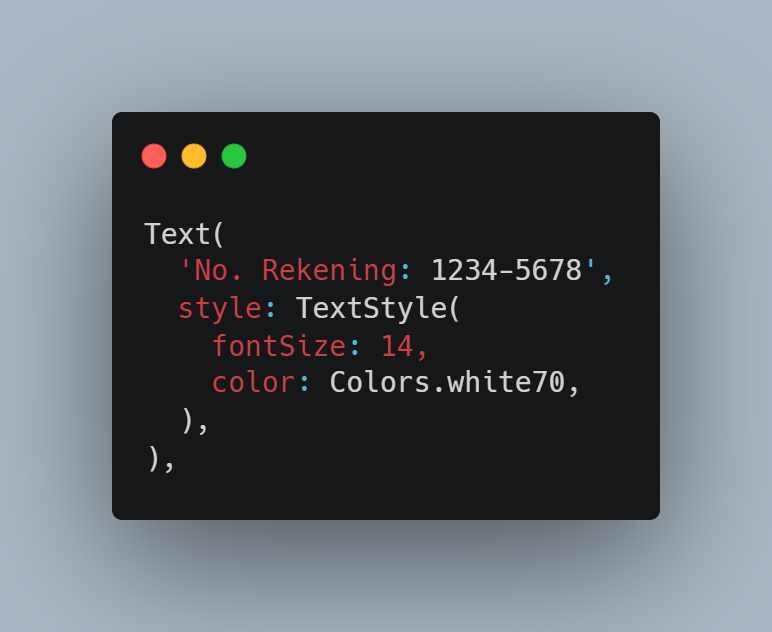
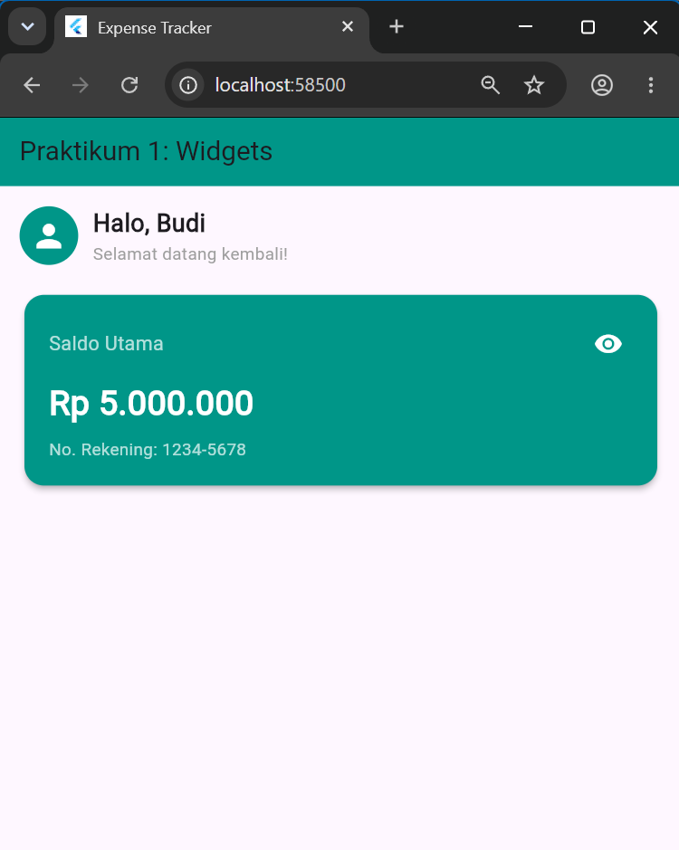

Praktikum 1 membahas pengenalan Widgets pada Flutter, khususnya StatelessWidget, StatefulWidget, dan manajemen state dasar menggunakan setState(). Aplikasi yang dibuat berupa dashboard sederhana dengan sapaan pengguna dan kartu saldo yang dapat menampilkan atau menyembunyikan nominal saldo.
Aplikasi diawali dengan membuat MaterialApp sebagai widget utama. Pada bagian ini ditentukan judul aplikasi, tema, dan halaman awal yang mengarah ke DashboardScreen.

Gambar 1. Widget utama menggunakan MaterialApp
DashboardScreen dibuat menggunakan Scaffold. Halaman ini memiliki AppBar dengan judul Praktikum 1 dan bagian body yang menggunakan Padding serta Column.
Di dalam Column ditempatkan dua komponen utama, yaitu GreetingWidget dan BalanceCardWidget.

Gambar 2. Struktur halaman utama dengan Scaffold
GreetingWidget dibuat menggunakan StatelessWidget karena tampilan pada bagian ini tidak mengalami perubahan saat aplikasi digunakan.
Widget Row digunakan untuk menempatkan avatar dan teks secara horizontal. Teks sapaan kemudian disusun menggunakan Column.

Gambar 3. GreetingWidget menggunakan StatelessWidget
Selanjutnya dibuat BalanceCardWidget menggunakan StatefulWidget. Widget ini membutuhkan state karena tampilan nominal saldo dapat berubah ketika tombol ikon mata ditekan.
Variabel _isBalanceVisible digunakan untuk menyimpan kondisi apakah saldo sedang ditampilkan atau disembunyikan.

Gambar 4. BalanceCardWidget menggunakan StatefulWidget
Fungsi _toggleVisibility() digunakan untuk mengubah nilai _isBalanceVisible. Perubahan tersebut dilakukan di dalam setState() sehingga Flutter melakukan render ulang pada bagian UI yang mengalami perubahan.
Ketika kondisi bernilai true, nominal saldo ditampilkan. Ketika kondisi berubah menjadi false, nominal saldo diganti menjadi bentuk yang disensor.

Gambar 5. Perubahan tampilan saldo menggunakan setState()
Hasilnya adalah dashboard sederhana yang memiliki sapaan pengguna di bagian atas dan kartu saldo di bawahnya.

Gambar 6. Hasil akhir aplikasi Praktikum 1
Pada tugas praktikum, mahasiswa diminta untuk mengubah warna tema aplikasi. Warna utama diubah menjadi Colors.teal

Gambar 7. Warna tema aplikasi diubah menjadi Colors.teal
menambahkan informasi nomor rekening pada BalanceCardWidget. Nomor rekening ditampilkan di bawah nominal saldo.

Gambar 9. BalanceCardWidget menggunakan StatefulWidget
Setelah warna tema diubah, dan ditambahkan nomor rekening, hasil akhir aplikasi terlihat lebih menarik dan informatif.

Gambar 8. Hasil akhir aplikasi setelah warna tema diubah menjadi Colors.teal
Hasil praktikum berupa aplikasi Flutter sederhana yang terdiri dari halaman dashboard, sapaan pengguna, dan kartu saldo. Bagian sapaan dibuat menggunakan StatelessWidget, sedangkan kartu saldo menggunakan StatefulWidget agar nominal dapat ditampilkan atau disembunyikan melalui interaksi pengguna.
Praktikum 1 memberikan pemahaman dasar mengenai penggunaan widget pada Flutter. StatelessWidget digunakan untuk tampilan yang tidak berubah, sedangkan StatefulWidget digunakan untuk tampilan yang memiliki data atau kondisi yang dapat berubah. Penggunaan setState() memungkinkan perubahan state ditampilkan kembali pada UI sehingga aplikasi dapat merespons interaksi pengguna.
Source code Praktikum dapat dilihat melalui repository berikut.
Lihat Repository GitHub